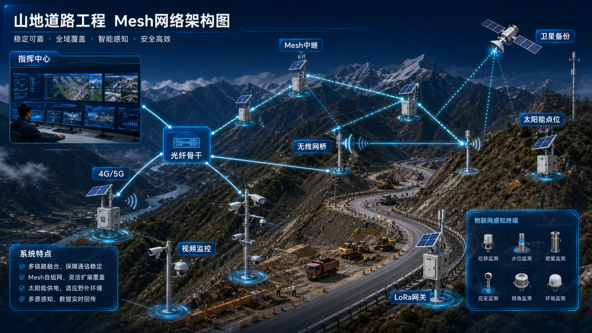
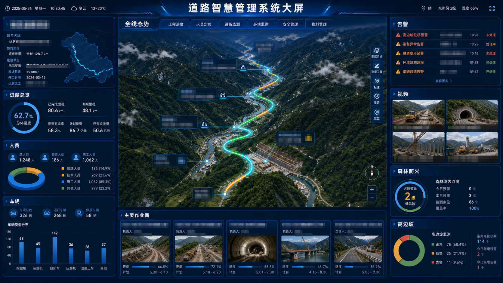
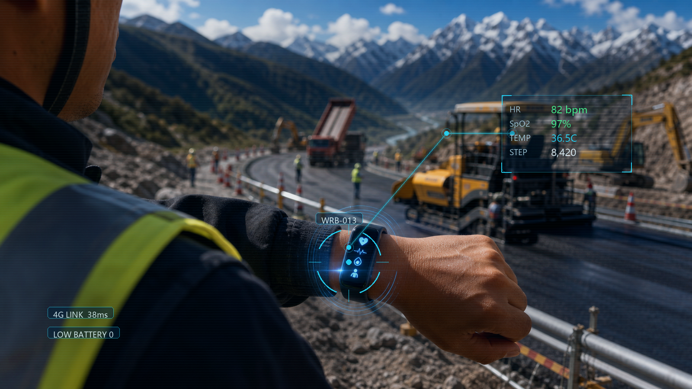
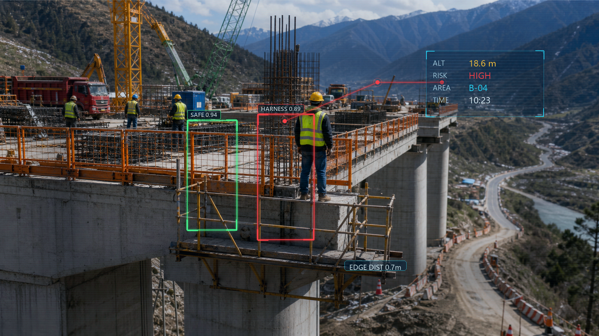
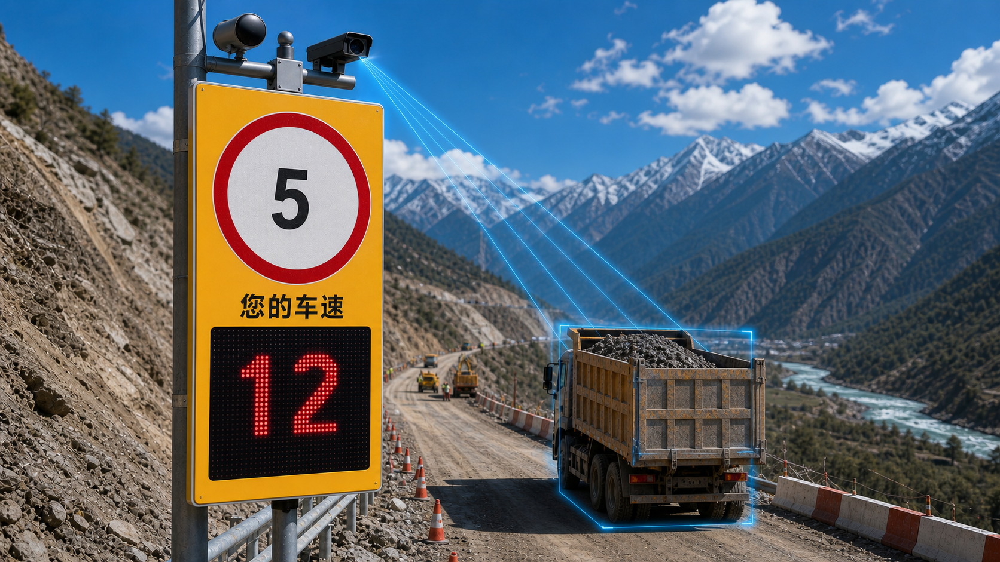
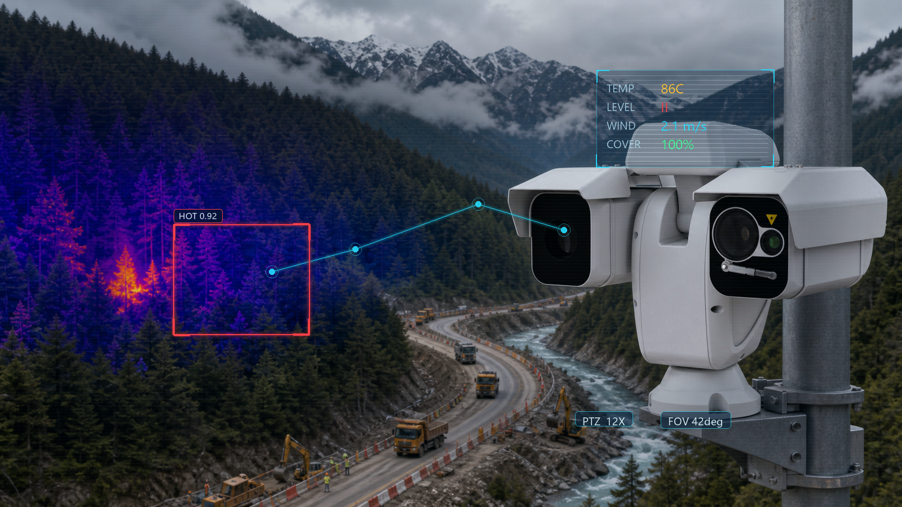
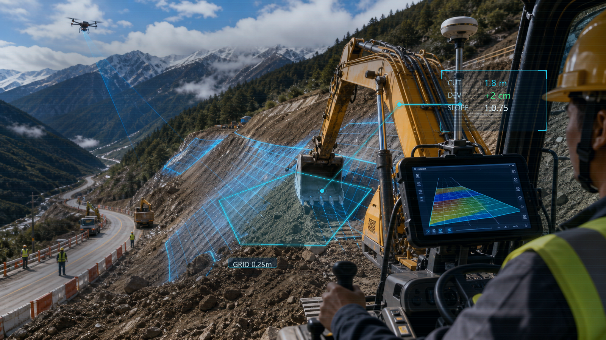
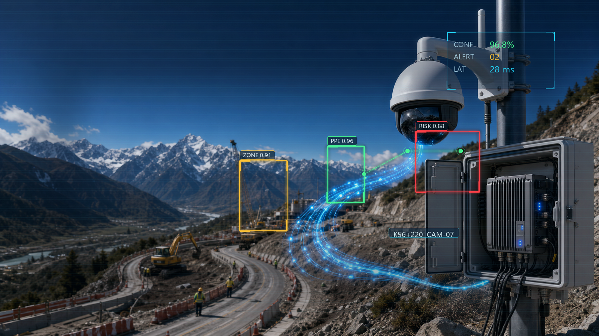
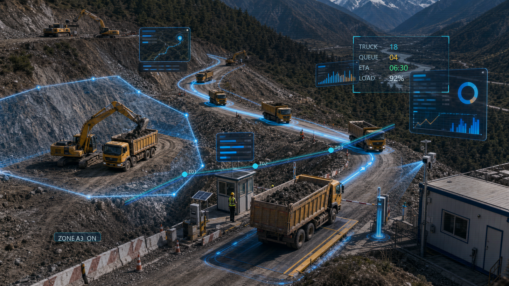
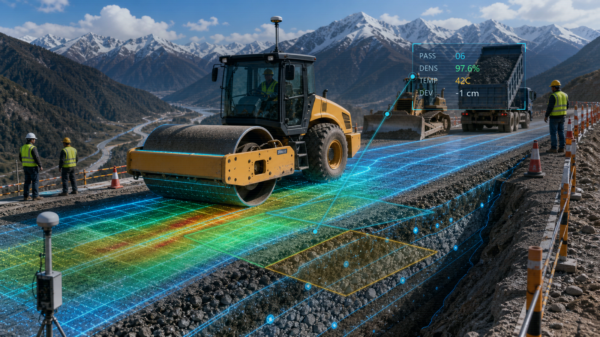

网络与视频基础
沿线点位通过光纤骨干、无线网桥、Mesh 中继、4G/5G CPE、LoRa 网关与卫星备份形成多链路覆盖。
Mesh 自组网断点缓存视频联网
面向线性道路工程，围绕网络基础、AI安全生产、人员健康、车辆测速、森林防火与土石方智能施工，形成一套能展示、能接入、能运营的项目级智慧施工方案。

以现场感知、边缘汇聚、通信传输、平台治理和业务应用为主线，把分散设备接入到道路智慧施工综合管控平台。
平台不是单点设备堆叠，而是把视频、人员、车辆、森林防火和土石方过程数据汇聚到统一数据底座，支撑指挥中心大屏、专题看板、移动端和资料归档。
保留当前方案中的真实素材，改成网页场景卡片，便于甲方按业务模块快速理解每套系统的作用和边界。

沿线点位通过光纤骨干、无线网桥、Mesh 中继、4G/5G CPE、LoRa 网关与卫星备份形成多链路覆盖。

实名档案、血氧、心率、体温、定位、静止异常和 SOS 求助统一接入，异常推送班组长和指挥中心。

覆盖桥梁墩柱、盖梁、脚手架、高边坡锚索和临边平台，对未挂安全带、临边靠近等行为标注留痕。

固定雷达抓拍一体机叠加 LED 实时车速屏，覆盖营地、施工便道、陡坡急弯和敏感路段。

双光谱热成像摄像机覆盖施工红线与林地交界，结合烟火识别、微气象和无人机巡护进行高温点推送。

开挖侧做 3D 引导，运输侧做定位与批次记录，填筑侧做压实过程记录，控制在辅助管理和质量追溯边界内。
AI识别不独立包装成炫技功能，而是接入告警、工单、复核和大屏展示，形成能落地的安全生产管理动作。
识别安全帽、反光衣、人员闯入、聚集和违规靠近，自动生成整改工单。
结合车辆台账和测速点，呈现超速、违停、逆行、未覆盖等风险线索。
识别烟火高温、临边靠近、夜间作业等风险，联动作业票和声光报警。
告警进入统一工单中心，支持现场确认、整改复核、统计分析和资料归档。

开挖、调度、填筑三块内容按华测产品能力收敛，不写无人化、全自动、强闭环等现场难落地表述。
以道路设计面为底座，将定位姿态、铲斗位置和设计高程偏差显示到驾驶室，辅助司机按设计面开挖。

以定位终端、RFID 识别终端和磁条卡为基础，记录车辆轨迹、运输批次、节点时间和电子围栏报警。

采集碾压轨迹、遍数、速度、层厚和压实质量信息，实时上传平台，用于过程指导和远程管理。
先把通信、视频和主数据底座建起来，再分场景接入设备，最后沉淀大屏、工单、报表和运维台账。
建设网络覆盖、视频联网、设备台账和统一账号权限，保证现场数据能稳定回传。
优先接入 AI 识别、人员健康、车辆测速和森林防火，形成高频风险闭环。
围绕开挖、调度、填筑三大系统完成车载终端、批次轨迹、压实过程和报表报警。
形成道路智慧管理大屏平台、专题子界面、移动端看板、报表中心和资料归档机制。